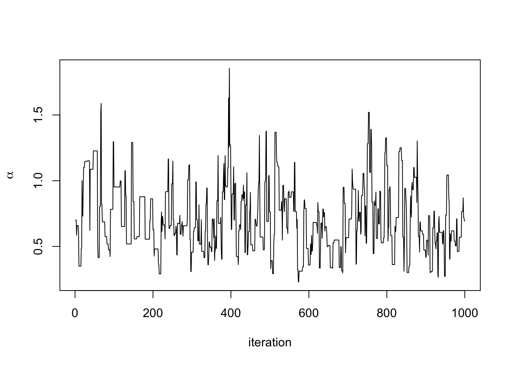
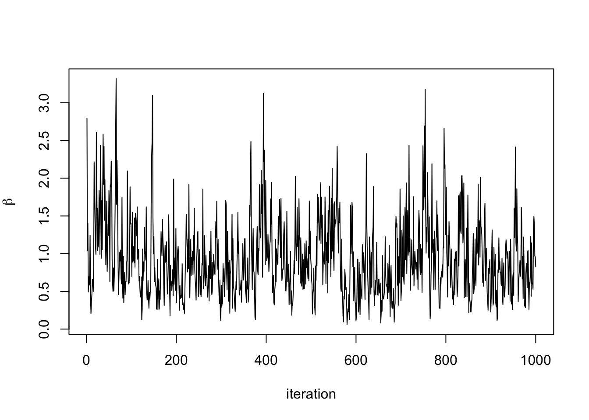
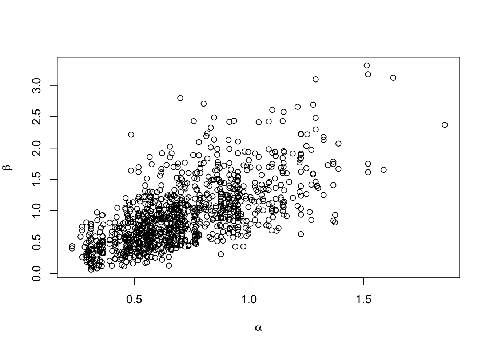

Working through quick-start example in nimble manual
library(methods)
library(knitr)
# set dev to png for graphs with > 1e3 points
## caching nimble can create trouble!The manual gives essentially no introduction to what appears to be a classic BUGS example model for stochastically failing pumps.
library(nimble)##
## Attaching package: 'nimble'## The following object is masked from 'package:stats':
##
## simulatepumpCode <- nimbleCode({
for (i in 1:N){
theta[i] ~ dgamma(alpha,beta)
lambda[i] <- theta[i]*t[i]
x[i] ~ dpois(lambda[i])
}
alpha ~ dexp(1.0)
beta ~ dgamma(0.1,1.0)
})pumpConsts <- list(N = 10,
t = c(94.3, 15.7, 62.9, 126, 5.24,
31.4, 1.05, 1.05, 2.1, 10.5))
pumpData <- list(x = c(5, 1, 5, 14, 3, 19, 1, 1, 4, 22))pumpInits <- list(alpha = 1,
beta = 1,
theta = rep(0.1, pumpConsts$N))pump <- nimbleModel(code = pumpCode,
name = 'pump',
constants = pumpConsts,
data = pumpData,
inits = pumpInits)## defining model...## building model...## setting data and initial values...## running calculate on model (any error reports that follow may simply
## reflect missing values in model variables) ...## ## checking model sizes and dimensions...## ## model building finished.pump$getNodeNames()## [1] "alpha" "beta" "lifted_d1_over_beta"
## [4] "theta[1]" "theta[2]" "theta[3]"
## [7] "theta[4]" "theta[5]" "theta[6]"
## [10] "theta[7]" "theta[8]" "theta[9]"
## [13] "theta[10]" "lambda[1]" "lambda[2]"
## [16] "lambda[3]" "lambda[4]" "lambda[5]"
## [19] "lambda[6]" "lambda[7]" "lambda[8]"
## [22] "lambda[9]" "lambda[10]" "x[1]"
## [25] "x[2]" "x[3]" "x[4]"
## [28] "x[5]" "x[6]" "x[7]"
## [31] "x[8]" "x[9]" "x[10]"Note that we can see theta has our initial conditions, while lambda has not yet been initialized:
pump$theta## [1] 0.1 0.1 0.1 0.1 0.1 0.1 0.1 0.1 0.1 0.1pump$lambda## [1] 9.430 1.570 6.290 12.600 0.524 3.140 0.105 0.105 0.210 1.050Hmm, initially we cannot simulate theta values though (or rather, we just get NaNs and warnings if we do). At the moment I’m not clear on why, though seems to be due to the lifted node:
simulate(pump, 'theta')
pump$theta## [1] 0.53734580 2.63195514 0.75100519 0.61140095 0.59235548 2.18748853
## [7] 0.58002217 0.33432378 1.40262927 0.09732794pump$lifted_d1_over_beta## [1] 1If we calculate the log probability density of the determinstic dependencies of alpha and beta nodes (i.e. the lifted node) then we’re okay:
set.seed(0) ## This makes the simulations here reproducible
calculate(pump, pump$getDependencies(c('alpha', 'beta'), determOnly = TRUE))## [1] 0simulate(pump, 'theta')pump$theta## [1] 1.79180692 0.29592523 0.08369014 0.83617765 1.22254365 1.15835525
## [7] 0.99001994 0.30737332 0.09461909 0.15720154We still need to initialize lambda, e.g. by calculating the probability density on those nodes:
calculate(pump, 'lambda')## [1] 0pump$lambda## [1] 168.9673926 4.6460261 5.2641096 105.3583839 6.4061287
## [6] 36.3723548 1.0395209 0.3227420 0.1987001 1.6506161though not entirely clear to me why the guide prefers to do this as the dependencies of theta (which clearly include lambda, but also other things). Also not clear if these calculate steps are necessary to proceed with the MCMCspec and buildMCMC, or compile steps. Let’s reset the model1 and find out:
pump <- nimbleModel(code = pumpCode,
name = 'pump',
constants = pumpConsts,
data = pumpData,
inits = pumpInits)## defining model...## building model...## setting data and initial values...## running calculate on model (any error reports that follow may simply
## reflect missing values in model variables) ...## ## checking model sizes and dimensions...## ## model building finished.pump$theta## [1] 0.1 0.1 0.1 0.1 0.1 0.1 0.1 0.1 0.1 0.1pump$lambda## [1] 9.430 1.570 6.290 12.600 0.524 3.140 0.105 0.105 0.210 1.050Good, we’re reset. Now we try:
Cpump <- compileNimble(pump)## compiling... this may take a minute. Use 'showCompilerOutput = TRUE' to see C++ compiler details.## compilation finished.pumpSpec <- configureMCMC(pump)
pumpSpec$addMonitors(c('alpha', 'beta', 'theta'))## thin = 1: alpha, beta, theta## These must be in same chunk as above!
pumpMCMC <- buildMCMC(pumpSpec)
CpumpMCMC <- compileNimble(pumpMCMC, project = pump)## compiling... this may take a minute. Use 'showCompilerOutput = TRUE' to see C++ compiler details.
## compilation finished.## and these
CpumpMCMC$run(1000)## |-------------|-------------|-------------|-------------|
## |-------------------------------------------------------|## NULLsamples <- as.matrix(CpumpMCMC$mvSamples)plot(samples[ , 'alpha'], type = 'l', xlab = 'iteration',
ylab = expression(alpha))
plot(samples[ , 'beta'], type = 'l', xlab = 'iteration',
ylab = expression(beta))
plot(samples[ , 'alpha'], samples[ , 'beta'], xlab = expression(alpha),
ylab = expression(beta))
Note the poor mixing (which is improved by the block sampler, as shown in the manual).
Not completely certain that this destroys anything connected to the object as C pointers from before, but seems like it should.↩